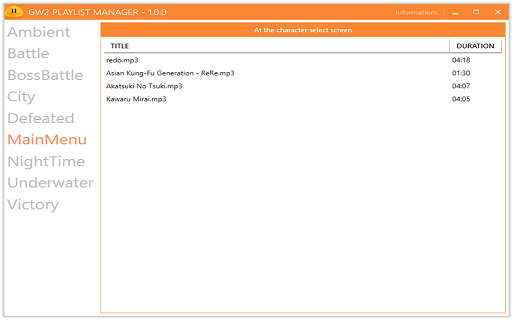
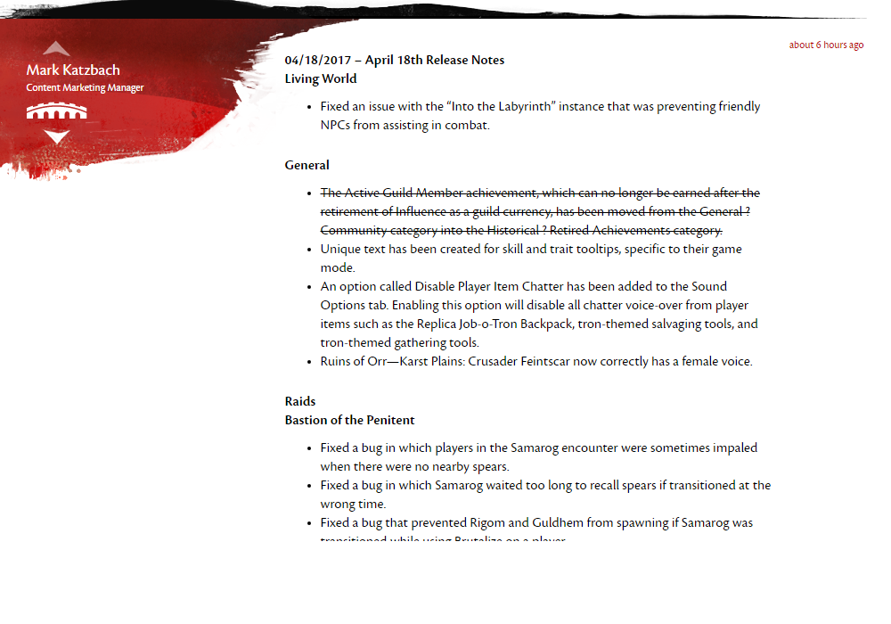

GW2 Tools and Scripts A Collection of Tools written in .Net and other languages for GW2

Playlist Manager
Easy to use Playlist Manager for Guild Wars 2. Supported filetypes: .aiff, .flac, .mp3, .ogg, .wav

Release Notifier
Checks every 10 seconds if a new patch thread is open in all current languages and opens it as soon as possible.